| Indicator | Reference | Core.Highlight.Other | Whole.or.Part.of.indicator | EBV.class | EBV.scale | Representative.fundamental | Sensitive | Underpins.NCP | Pristine.value | Degraded.value | Percentage.now | Decadal.rate | Years | N | N.since.1970 |
|---|---|---|---|---|---|---|---|---|---|---|---|---|---|---|---|
| Aboveground biomass | Liu et al. (2015) | O | W | Ecosystem structure | Y | N | Y | 770.90 | 0 | 49.18 | -0.09 | 1993-2012 | 20 | 20 | |
| Biodiversity Habitat Index (forest biomes) | Hoskins et al. (2018) | C | W | Ecosystem structure | Y | N | N | 1.00 | 0 | 25.89 | -6.10 | 2000-2014 | 7 | 7 | |
| Coastal carbon-rich habitat | Ocean Health Index | O | W | Ecosystem structure | Y | Y | Y | NA | 0 | NA | -5.83 | 1980-2016 | 2 | 2 | |
| Coastal protection habitats | Ocean Health Index | O | W | Ecosystem structure | Y | Y | Y | NA | 0 | NA | -3.51 | 1980-2017 | 2 | 2 | |
| Extent of forests (FAO) | FAO (2015) | C | W | Ecosystem structure | N | N | Y | 0.44 | 0 | 70.12 | -1.24 | 1990-2015 | 5 | 5 | |
| Extent of forests (remote-sensing) | Hansen et al. (2013) | C | W | Ecosystem structure | N | N | Y | 59105082.23 | 0 | 30.22 | -6.41 | 2000-2012 | 2 | 2 | |
| Extent of intact forest landscapes | Potapov et al. (2017) | O | W | Ecosystem structure | N | Y | N | 59105082.00 | 0 | 20.10 | -5.52 | 2000-2013 | 2 | 2 | |
| Extent of remaining wilderness | Watson et al. (2016) | O | W | Ecosystem structure | N | Y | N | 129741000.00 | 0 | 23.20 | -4.49 | 1993-2015 | 2 | 2 | |
| Fraction of ocean not fished | Kroodsma et al. (2018) | O | W | Ecosystem structure | Y | Y | N | 100.00 | 0 | 45.00 | NA | 2016-2016 | 1 | 1 | |
| Land not cultivated or urban (global) | ESA (2017) | O | W | Ecosystem structure | Y | N | N | 131.57 | 0 | 76.74 | -0.57 | 1992-2015 | 24 | 24 | |
| Land not cultivated or urban (UoA: desert & dryland) | ESA (2017) | O | P | Ecosystem structure | Y | N | N | 27.89 | 0 | 91.98 | -0.19 | 1992-2015 | 24 | 24 | |
| Land not cultivated or urban (UoA: Mediterranean forest) | ESA (2017) | O | P | Ecosystem structure | Y | N | N | 3.22 | 0 | 49.29 | -0.53 | 1992-2015 | 24 | 24 | |
| Land not cultivated or urban (UoA: temperate forest) | ESA (2017) | O | P | Ecosystem structure | Y | N | N | 32.04 | 0 | 74.26 | -0.23 | 1992-2015 | 24 | 24 | |
| Land not cultivated or urban (UoA: temperate grassland) | ESA (2017) | O | P | Ecosystem structure | Y | N | N | 11.19 | 0 | 43.10 | -2.55 | 1992-2015 | 24 | 24 | |
| Land not cultivated or urban (UoA: tropical forest) | ESA (2017) | O | P | Ecosystem structure | Y | N | N | 23.49 | 0 | 70.35 | -1.34 | 1992-2015 | 24 | 24 | |
| Land not cultivated or urban (UoA: tropical grassland) | ESA (2017) | O | P | Ecosystem structure | Y | N | N | 20.18 | 0 | 77.95 | -0.70 | 1992-2015 | 24 | 24 | |
| Land not cultivated or urban (UoA: tundra & mountains) | ESA (2017) | O | P | Ecosystem structure | Y | N | N | 13.55 | 0 | 94.78 | -0.03 | 1992-2015 | 24 | 24 | |
| Mangrove forest cover (km2) | Hamilton & Casey (2016) | O | W | Ecosystem structure | Y | Y | N | 346432.04 | 0 | 23.53 | -1.73 | 2000-2014 | 15 | 15 | |
| Natural habitat extent | FAO | O | W | Ecosystem structure | Y | N | N | 100.00 | 0 | 62.32 | -1.00 | 1961-2011 | 51 | 42 | |
| Percentage live coral cover | Tittensor et al. (2014) | O | W | Ecosystem structure | Y | Y | N | 100.00 | 0 | 31.42 | -4.01 | 1972-2016 | 41 | 41 | |
| Remaining primary vegetation | Hurtt et al. (in press) | O | W | Ecosystem structure | Y | N | N | 100.00 | 0 | 38.57 | -4.12 | 850-2015 | 1166 | 46 | |
| Soil organic carbon | Stoorvogel et al. (2017) | O | W | Ecosystem structure | Y | N | N | 2200.00 | 0 | 92.00 | NA | 2010-2010 | 1 | 1 | |
| Wetland Extent Trends Index | Dixon et al. (2016) | H | W | Ecosystem structure | Y | Y | N | NA | 0 | NA | -7.74 | 1970-2015 | 46 | 46 | |
| Biological pump efficiency | Cael et al. (2017) | O | W | Ecosystem function | Y | N | N | NA | 0 | NA | -0.47 | 1982-2014 | 2 | 2 | |
| Biomass turnover rate | Erb et al. (2016) | O | W | Ecosystem function | Y | N | N | 0.07 | 0 | 194.37 | NA | 2000-2000 | 1 | 1 | |
| NPP remaining in ecosystems | Krausmann et al. (2013) | O | W | Ecosystem function | Y | N | N | 52221669.00 | 0 | 86.22 | 1.26 | 1910-2005 | 9 | 5 | |
| Ocean Net Primary Productivity | Behrenfeld et al. (2006) | O | W | Ecosystem function | Y | N | Y | NA | 0 | NA | 4.71 | 1998-2007 | 10 | 10 | |
| Oceanic carbon sequestration | Le Quere et al. (2018) | O | W | Ecosystem function | Y | N | Y | NA | NA | NA | 28.78 | 1970-2010 | 41 | 41 | |
| Terrestrial carbon sequestration | Le Quere et al. (2018) | O | W | Ecosystem function | Y | N | Y | NA | NA | NA | 22.04 | 1951-2015 | 65 | 46 | |
| Terrestrial NPP (TRENDY) | Ichii et al. ? | O | W | Ecosystem function | Y | N | N | 52.22 | 0 | 135.23 | 2.58 | 1951-2015 | 65 | 46 | |
| Terrestrial NPP (Zhao & Running 2010) | Zhao & Running (2010) | O | W | Ecosystem function | Y | N | Y | NA | 0 | NA | 0.59 | 2000-2015 | 16 | 16 | |
| Biodiversity Intactness Index (overall) | Hill et al. (2018) | C | W | Community composition | 1. Local | Y | N | N | 1.00 | 0 | 78.59 | -0.83 | 900-2014 | 53 | 18 |
| Biodiversity Intactness Index (tropical forests) | De Palma et al. (2018) | C | P | Community composition | 1. Local | Y | N | N | 1.00 | 0 | 58.46 | -3.04 | 2001-2012 | 12 | 12 |
| Local species richness (BioTime) | Dornelas et al. (2014) | H | W | Community composition | 1. Local | Y | N | N | NA | 0 | NA | 1.22 | 1960-2015 | 12 | 10 |
| Local species richness (PREDICTS) | Hill et al. (2018) | C | W | Community composition | 1. Local | Y | N | N | 1.00 | 0 | 73.56 | -1.05 | 900-2014 | 53 | 18 |
| Mean Species Abundance Index | Alkemade et al. (2009) [method] | H | W | Community composition | 1. Local | Y | N | N | 100.00 | 0 | 66.43 | -2.82 | 0-2010 | 8 | 2 |
| All-taxon grid-cell species richness (AIM) | Kim et al. (2018) | O | W | Community composition | 2. Regional | Y | N | N | NA | 0 | NA | NA | 1900-2015 | 2 | 1 |
| Amphibian grid-cell species richness (AIM) | Kim et al. (2018) | O | P | Community composition | 2. Regional | Y | Y | N | NA | 0 | NA | NA | 1900-2015 | 2 | 1 |
| Bird grid-cell species richness (AIM) | Kim et al. (2018) | O | P | Community composition | 2. Regional | Y | N | N | NA | 0 | NA | NA | 1900-2015 | 2 | 1 |
| Cumulative introduced invasive aliens | Sarah Darrah Ch3 | H | W | Community composition | 2. Regional | Y | N | N | 0.00 | NA | NA | 11.43 | 1500-2012 | 247 | 43 |
| Cumulative number of alien species | Seebens et al. (2017) | O | W | Community composition | 2. Regional | Y | N | N | 0.00 | NA | NA | 13.15 | 1970-2005 | 36 | 36 |
| Functional intactness (Madingley) | Kim et al. (2018) | O | W | Community composition | 2. Regional | Y | N | N | NA | 0 | NA | -0.38 | 1915-2015 | 21 | 10 |
| Mammal grid-cell species richness (AIM) | Kim et al. (2018) | O | P | Community composition | 2. Regional | Y | N | N | NA | 0 | NA | NA | 1900-2015 | 2 | 1 |
| Mean regional bird richness (cSAR) | Kim et al. (2018) | O | W | Community composition | 2. Regional | Y | N | N | NA | 0 | NA | 0.14 | 1910-2015 | 12 | 6 |
| Mean regional forest-specialist bird richness (cSAR) | Kim et al. (2018) | O | P | Community composition | 2. Regional | N | Y | N | NA | 0 | NA | -0.39 | 1910-2015 | 12 | 6 |
| Plant grid-cell species richness (AIM) | Kim et al. (2018) | O | P | Community composition | 2. Regional | Y | N | N | NA | 0 | NA | NA | 1900-2015 | 2 | 1 |
| Reptile grid-cell species richness (AIM) | Kim et al. (2018) | O | P | Community composition | 2. Regional | Y | N | N | NA | 0 | NA | NA | 1900-2015 | 2 | 1 |
| Invertebrate abundance [placeholder] | Dirzo et al. (2014) | O | W | Species populations | 1. Abundance | Y | N | N | NA | 0 | NA | -11.25 | 1970-2010 | 2 | 2 |
| Living Planet Index | Collen et al. (2009) | H | W | Species populations | 1. Abundance | Y | N | N | NA | 0 | NA | -13.44 | 1970-2012 | 43 | 43 |
| Percentage of fish stocks biologically sustainable | FAO (2016) | C | W | Species populations | 1. Abundance | N | N | Y | 100.00 | 0 | 68.86 | -6.23 | 1974-2013 | 19 | 19 |
| Predatory fish biomass | Christensen et al. (2014) | O | W | Species populations | 1. Abundance | N | Y | Y | NA | 0 | NA | -14.12 | 1880-2010 | 4 | 3 |
| Prey fish biomass | Christensen et al. (2014) | O | W | Species populations | 1. Abundance | N | N | N | NA | 0 | NA | 10.13 | 1880-2010 | 4 | 3 |
| Wild Bird Index (habitat specialists) | Gregory & van Strien (2010) | O | P | Species populations | 1. Abundance | N | Y | N | NA | 0 | NA | -9.04 | 1968-2014 | 47 | 45 |
| Extent of suitable habitat [placeholder] | Visconti et al. (2016) [method] | O | W | Species populations | 2. Range | Y | N | N | NA | 0 | NA | -5.50 | 1970-2010 | 2 | 2 |
| Mammalian range size | Faurby & Svenning (2015) | O | W | Species populations | 2. Range | Y | N | N | 1298365.00 | 0 | 82.65 | NA | 2008-2008 | 1 | 1 |
| Megafaunal range size | Faurby & Svenning (2015) | O | P | Species populations | 2. Range | N | Y | N | 242960.00 | 0 | 27.70 | NA | 2008-2008 | 1 | 1 |
| Species Habitat Index | Jetz et al. (2012) | C | W | Species populations | 2. Range | Y | N | N | NA | 0 | NA | -1.03 | 2001-2014 | 14 | 14 |
| Global bird species richness (cSAR) | Kim et al. (2018) | O | W | Species populations | 3. Existence | Y | N | N | 100.00 | 0 | 97.59 | -0.12 | 1900-2015 | 13 | 6 |
| Global forest-specialist bird species richness (cSAR) | Kim et al. (2018) | O | P | Species populations | 3. Existence | N | Y | N | 100.00 | 0 | 94.88 | -0.32 | 1900-2015 | 13 | 6 |
| Global mammal & bird species remaning | IUCN (2017) | H | W | Species populations | 3. Existence | Y | N | N | 16796.00 | 0 | 98.60 | -0.06 | 1500-2017 | 10 | 3 |
| Global plant species remaining (BILBI) | Kim et al. (2018) | C | W | Species populations | 3. Existence | Y | N | N | 1.00 | 0 | 95.74 | NA | 1900-2015 | 2 | 1 |
| Red List Index (forest specialists) | Butchart et al. (2007) | C | P | Species populations | 3. Existence | N | Y | N | 1.00 | 0 | 72.01 | -1.08 | 1988-2016 | 8 | 8 |
| Red List Index (impacts of fisheries) | Butchart et al. (2007) | C | P | Species populations | 3. Existence | N | N | N | 1.00 | 0 | 88.32 | -0.03 | 1988-2016 | 8 | 8 |
| Red List Index (impacts of invasive alien species) | Butchart et al. (2007) | C | P | Species populations | 3. Existence | N | N | N | 1.00 | 0 | 83.65 | -0.29 | 1988-2016 | 8 | 8 |
| Red List Index (impacts of pollution) | Butchart et al. (2007) | C | P | Species populations | 3. Existence | N | N | N | 1.00 | 0 | 83.88 | -0.13 | 1986-2016 | 31 | 31 |
| Red List Index (impacts of utilisation) | Butchart et al. (2007) | C | P | Species populations | 3. Existence | N | N | Y | 1.00 | 0 | 83.84 | -0.20 | 1986-2016 | 31 | 31 |
| Red List Index (internationally traded species) | Butchart et al. (2007) | C | P | Species populations | 3. Existence | N | N | Y | 1.00 | 0 | 93.27 | -0.28 | 1988-2016 | 8 | 8 |
| Red List Index (overall) | Butchart et al. (2007) | C | W | Species populations | 3. Existence | Y | N | N | 1.00 | 0 | 74.57 | -4.25 | 1994-2016 | 7 | 7 |
| Red List Index (pollinators) | Butchart et al. (2007) | C | P | Species populations | 3. Existence | N | N | Y | 1.00 | 0 | 90.17 | -0.47 | 1988-2016 | 8 | 8 |
| Red List Index (species used in food & medicine) | Butchart et al. (2007) | C | P | Species populations | 3. Existence | N | N | Y | 1.00 | 0 | 80.39 | -1.70 | 1988-2012 | 6 | 6 |
| Red List Index (wild relatives of farmed & domesticated species) | Butchart et al. (2007) | C | P | Species populations | 3. Existence | N | N | Y | 1.00 | 0 | 77.51 | -0.80 | 1988-2016 | 8 | 8 |
| Leaf Area Index | Liu et al. (2010) | O | W | Species traits | Y | N | N | NA | 0 | NA | 1.15 | 1982-2009 | 2 | 2 | |
| Mammalian body mass | Santini et al. (2017) | O | W | Species traits | Y | Y | N | 677.03 | 0 | 81.70 | NA | 2009-2009 | 1 | 1 | |
| Marine Trophic Index | Kleisner et al. (2014) | C | W | Species traits | N | N | Y | NA | 1 | NA | -0.93 | 1956-2014 | 59 | 45 | |
| Mean functional diversity (Madingley) | Kim et al. (2018) | O | W | Species traits | Y | N | N | NA | 0 | NA | -0.21 | 1901-2015 | 22 | 10 | |
| Proportion of predatory fish [placeholder] | Kleisner et al. (2015) | O | W | Species traits | N | Y | Y | NA | 0 | NA | -10.88 | 1988-2010 | 19 | 19 |
Indicator Analyses with the IA R-Package
1 Overview
This Quarto project demonstrates the usage of the IA (Indicator Analysis) R-package, which is designed to systematically display and standardize global indicators of the status and the trends in nature.
The IA R-package provides an open-access framework that enables users to access annually and globally aggregated indicators as described and standardized in the IPBES Global Assessment Chapter 2.2 – Supplementary Material: Indicators of Status & Trends in Nature. Furthermore, the AI package offers R users a consistent and replicable way to analyze, plot and compare those indicators.
Please note that while the IA R-package is developed with reference to the IPBES report, IPBES does not assume any accountability for the contents or outputs of the package.
2 Summary of Indicators
In this script, we select quantitative data that represent the state of nature globally or across multiple regions. The process begins by considering IPBES Core and Highlighted indicators, along with additional data from peer-reviewed literature and other authoritative sources (see Table 1). Indicators are assigned to Essential Biodiversity Variable (EBV) classes and categorized based on their relevance to ecosystems and their sensitivity to human impacts.
3 Exploring AI Package Functionalities
The package provides several features for exploring and displaying indicators. Below is an example demonstrating the key functions available.
To obtain an overview of the available indicators and their names, the print_indicatorNames() function can be used:
print_indicatorNames() [1] "Aboveground biomass (PgC)"
[2] "All-taxa habitat (BILBI)"
[3] "All-taxa habitat (BILBI) - hotspots"
[4] "All-taxa richness (BILBI)"
[5] "All-taxa richness (BILBI) - hotspots"
[6] "Area of mangrove forest cover (km2)"
[7] "BII (Hotspots)"
[8] "BII (Indigenous Lands)"
[9] "BII tropical forest (Hotspots)"
[10] "BII tropical forest (Indigenous Lands)"
[11] "Biodiversity Intactness Index (global)"
[12] "Biodiversity Intactness Index (tropical forest only)"
[13] "Biological pump efficiency"
[14] "Biomass turnover rate"
[15] "BioTime Local Species Richness"
[16] "Change in grid-cell species richness (all taxa) - AIM"
[17] "Change in grid-cell species richness (amphibians) - AIM"
[18] "Change in grid-cell species richness (birds) - AIM"
[19] "Change in grid-cell species richness (mammals) - AIM"
[20] "Change in grid-cell species richness (plants - AIM"
[21] "Change in grid-cell species richness (reptiles) - AIM"
[22] "cSAR Global calculation all birds"
[23] "cSAR Global calculation forest specialists"
[24] "cSAR Local results aggregated to Global all birds"
[25] "cSAR Local results aggregated to Global forest specialists"
[26] "cSoil (PgC)"
[27] "Cumulative number of alien species"
[28] "cVeg (PgC)"
[29] "Evapotranspiration (1000km3/year)"
[30] "Extent and condition of coastal protection habitats"
[31] "Extent and condition of natural coastal carbon sinks"
[32] "Extent of Suitable Habitat"
[33] "Forest area as a percentage of total land area"
[34] "Freshwater LPI"
[35] "Global wilderness extent (km2)"
[36] "Intact Forest Landscape extent"
[37] "Invertebrate habitat (BILBI)"
[38] "Invertebrate richness (BILBI"
[39] "Land not cropland or urban - deserts & drylands"
[40] "Land not cropland or urban - hotspot"
[41] "Land not cropland or urban - indigenous land"
[42] "Land not cropland or urban - Mediterranean forests"
[43] "Land not cropland or urban - temperate forests"
[44] "Land not cropland or urban - temperate grassland"
[45] "Land not cropland or urban - tropical forests"
[46] "Land not cropland or urban - tropical grassland"
[47] "Land not cropland or urban - tundra & mountains"
[48] "Land not cropland or urban (overall)"
[49] "Leaf Area Index"
[50] "Living Planet Index (overall)"
[51] "Madingley functional dissimilarity (50%quantile)"
[52] "Madingley functional richness (50%quantile)"
[53] "Marine LPI"
[54] "Marine Trophic Index"
[55] "Marine wilderness %"
[56] "Mean Species Abundance CC"
[57] "Mean Species Abundance LU"
[58] "Median mammalian body mass"
[59] "MSA"
[60] "MSA (hotspots)"
[61] "MSA (IL)"
[62] "NBP (PgC/yr)"
[63] "NPP (PgC/yr)"
[64] "NPP_eco (Pg C)"
[65] "Number of invasive alien species introductions"
[66] "Numbers of extant mammal and bird species"
[67] "Ocean carbon sink PgC"
[68] "Ocean Net Primary Productivity (PgC)"
[69] "Ocean not fished in given year"
[70] "Percentage live coral cover"
[71] "Percentage natural habitat extent"
[72] "Percentage primary LUH2"
[73] "Permanent surface water extent"
[74] "Plant habitat (BILBI)"
[75] "Plant richness (BILBI)"
[76] "Predatory sea fish biomass"
[77] "PREDICTS SR-weighted mean local species richness (global)"
[78] "Prey sea fish biomass"
[79] "Primary vegetation (Hotspots)"
[80] "Primary vegetation (Indigenous lands)"
[81] "Proportion of fish stocks within biologically sustainable levels"
[82] "Red List Index"
[83] "Red List index (forest specialists)"
[84] "Red List Index (impacts of fisheries)"
[85] "Red List Index (impacts of invasive alien species)"
[86] "Red List Index (impacts of pollution)"
[87] "Red List Index (impacts of utilisation)"
[88] "Red List Index (internationally traded species)"
[89] "Red List Index (pollinator species) "
[90] "Red List Index (species used for food and medicine) "
[91] "Red List Index (wild relatives of farmed and domesticated species) "
[92] "Seagrass meadow extent"
[93] "Soil organic carbon"
[94] "Species Habitat Index"
[95] "Terrestrial LPI"
[96] "Terrestrial mammal grid cells"
[97] "Terrestrial megafaunal grid cells"
[98] "Terrestrial Net Primary Productivity (PgC)"
[99] "Tree cover change (Song)"
[100] "Vertebrate habitat (BILBI)"
[101] "Vertebrate richness (BILBI"
[102] "Wetland Extent Trends Index"
[103] "Wild Bird Index (habitat specialists)"
[104] "Wild mammal biomass" From this list, an indicator, such as “Aboveground biomass (PgC)”, can be selected for further investigation. Once an indicator is chosen, the corresponding data can be loaded using the load_indicatorData() function:
load_indicatorData("Percentage natural habitat extent") year value
1 1961 65.82
2 1962 65.74
3 1963 65.66
4 1964 65.59
5 1965 65.49
6 1966 65.40
7 1967 65.31
8 1968 65.23
9 1969 65.07
10 1970 65.01
11 1971 64.90
12 1972 64.78
13 1973 64.66
14 1974 64.55
15 1975 64.50
16 1976 64.50
17 1977 64.46
18 1978 64.43
19 1979 64.34
20 1980 64.27
21 1981 64.23
22 1982 64.15
23 1983 64.03
24 1984 63.89
25 1985 63.64
26 1986 63.46
27 1987 63.34
28 1988 63.17
29 1989 63.07
30 1990 62.97
31 1991 62.92
32 1992 62.48
33 1993 62.25
34 1994 62.12
35 1995 62.16
36 1996 62.16
37 1997 62.11
38 1998 62.05
39 1999 62.13
40 2000 62.06
41 2001 62.05
42 2002 62.13
43 2003 62.26
44 2004 62.11
45 2005 62.16
46 2006 62.20
47 2007 62.31
48 2008 62.26
49 2009 62.34
50 2010 62.36
51 2011 62.23To visualize the global status of the selected indicator in a manner consistent with the IPBES Annex, the plot_absoluteValue() function can be applied. This function presents the absolute values, representing the globally aggregated data over time in its original units.
plot_absoluteValue("Percentage natural habitat extent")
Trends over time in comparison o a pristine world can be examined using the plot_percentageRemaining() function, while changes since 1970 can be assessed with plot_changeSince1970(), displaying the globally aggregated value standardized to a percentage or relative to its 1970 value.
plot_percentageRemaining("Percentage natural habitat extent")
plot_changeSince1970("Percentage natural habitat extent")
Finally, to display both the status and trends of the indicator side by side, the plot_indicatorStatusAndTrend() function can be used:
plot_indicatorStatusAndTrend("Percentage natural habitat extent")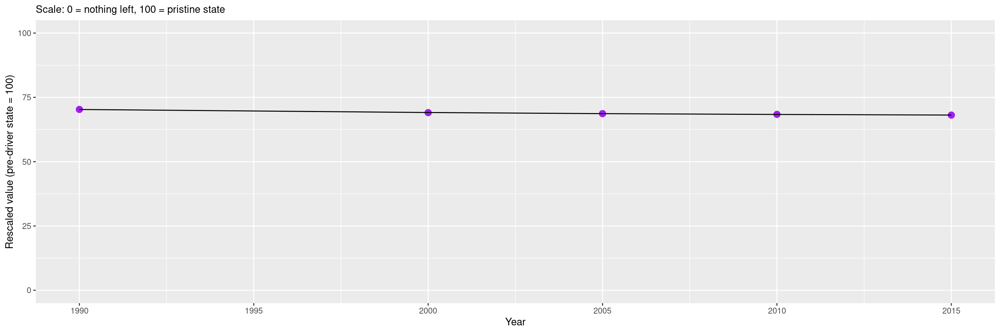
4 Display all indicators available
4.1 Indicators of ecosystem structure
4.1.1 Aboveground biomass
plot_indicatorStatusAndTrend("Aboveground biomass (PgC)")4.1.2 Biodiversity Habitat Index (overall habitat integrity)
plot_indicatorStatusAndTrend("All-taxa habitat (BILBI)")plot_indicatorStatusAndTrend("All-taxa habitat (BILBI) - hotspots")
plot_indicatorStatusAndTrend("Invertebrate habitat (BILBI)")
plot_indicatorStatusAndTrend("Plant habitat (BILBI)")
plot_indicatorStatusAndTrend("Vertebrate habitat (BILBI)")
4.1.3 Coastal protection habitats
plot_indicatorStatusAndTrend("Extent and condition of coastal protection habitats")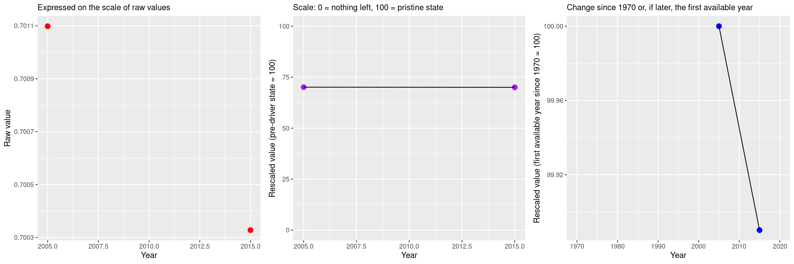
Subset: Coastal carbon-rich habitat
plot_indicatorStatusAndTrend("Extent and condition of natural coastal carbon sinks")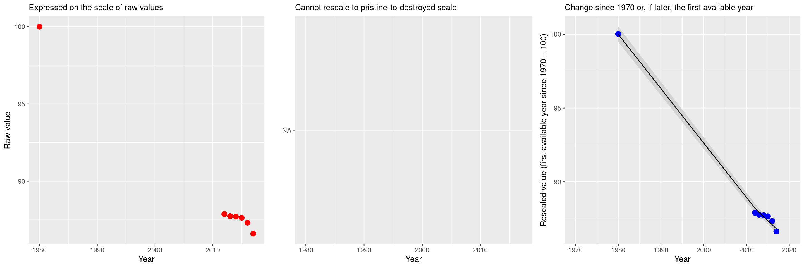
4.1.4 Extent of forests
plot_indicatorStatusAndTrend("Forest area as a percentage of total land area")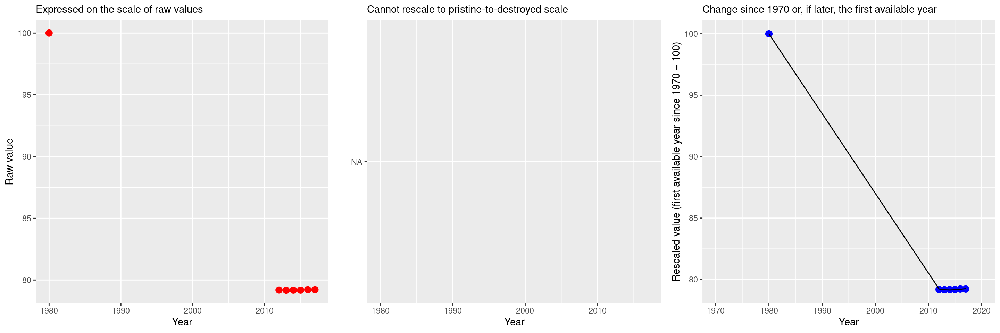
4.1.5 Extent of intact forest landscapes
plot_indicatorStatusAndTrend("Intact Forest Landscape extent")
4.1.6 Extent of marine wilderness
plot_indicatorStatusAndTrend("Marine wilderness %")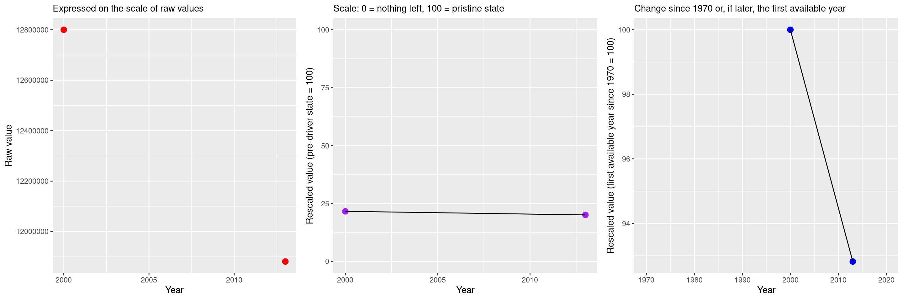
4.1.7 Extent of terrestrial wilderness
plot_indicatorStatusAndTrend("Global wilderness extent (km2)")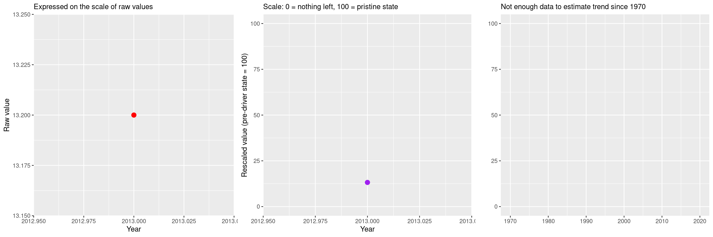
4.1.8 Fraction of ocean not fished per year
plot_indicatorStatusAndTrend("Ocean not fished in given year")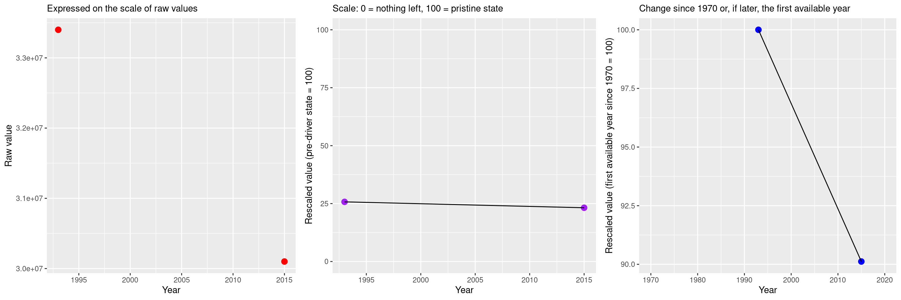
4.1.9 Land not cultivated or urban
plot_indicatorStatusAndTrend("Land not cropland or urban (overall)")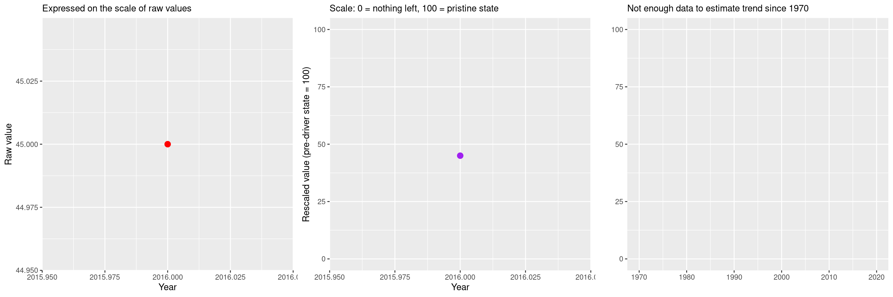
plot_indicatorStatusAndTrend("Land not cropland or urban - hotspot")
plot_indicatorStatusAndTrend("Land not cropland or urban - indigenous land")
plot_indicatorStatusAndTrend("Land not cropland or urban - tundra & mountains")
plot_indicatorStatusAndTrend("Land not cropland or urban - deserts & drylands")
plot_indicatorStatusAndTrend("Land not cropland or urban - temperate forests")
plot_indicatorStatusAndTrend("Land not cropland or urban - Mediterranean forests")
plot_indicatorStatusAndTrend("Land not cropland or urban - tropical grassland")
plot_indicatorStatusAndTrend("Land not cropland or urban - tropical forests")
plot_indicatorStatusAndTrend("Land not cropland or urban - temperate grassland")
4.1.10 Leaf Area Index
plot_indicatorStatusAndTrend("Leaf Area Index")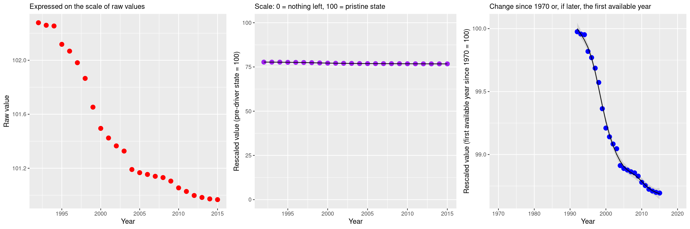
4.1.11 Mangrove forest area
plot_indicatorStatusAndTrend("Area of mangrove forest cover (km2)")4.1.12 Natural habitat extent
plot_indicatorStatusAndTrend("Percentage natural habitat extent")4.1.13 Percentage of live coral cover
plot_indicatorStatusAndTrend("Percentage live coral cover")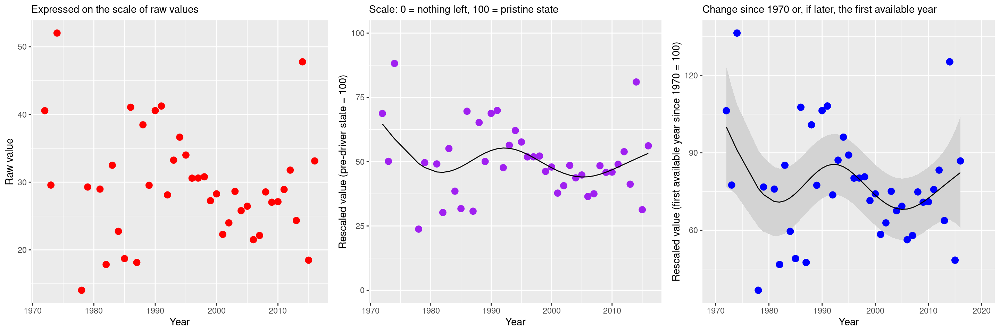
4.1.14 Permanent surface water extent
plot_indicatorStatusAndTrend("Permanent surface water extent")
4.1.15 Remaining primary vegetation
plot_indicatorStatusAndTrend("Percentage primary LUH2")plot_indicatorStatusAndTrend("Primary vegetation (Hotspots)")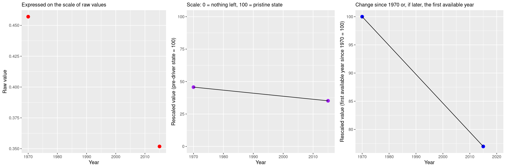
plot_indicatorStatusAndTrend("Primary vegetation (Indigenous lands)")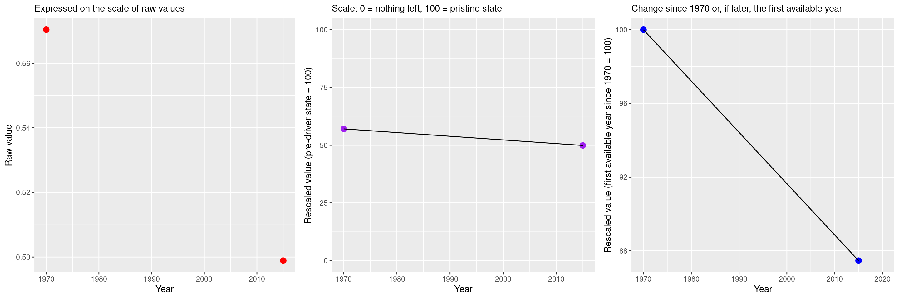
4.1.16 Seagrass meadow area
plot_indicatorStatusAndTrend("Seagrass meadow extent")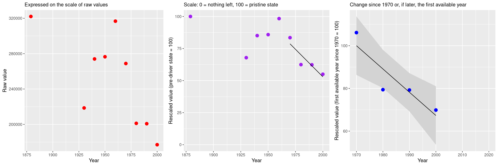
4.1.17 Soil organic carbon (correlative model)
plot_indicatorStatusAndTrend("Soil organic carbon")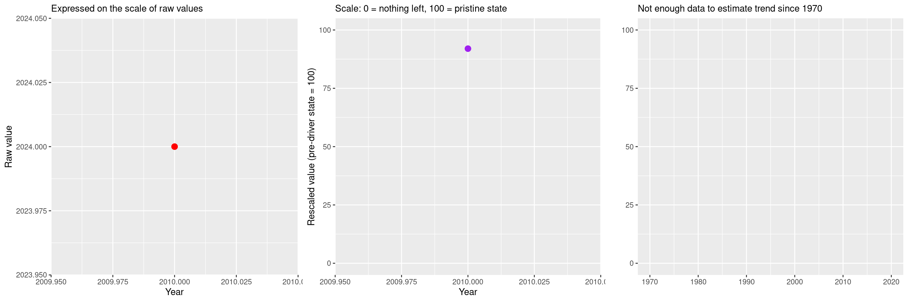
4.1.18 Soil organic carbon (mechanistic models)
plot_indicatorStatusAndTrend("cSoil (PgC)")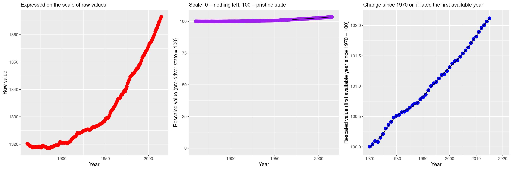
4.1.19 Tree cover
plot_indicatorStatusAndTrend("Tree cover change (Song)")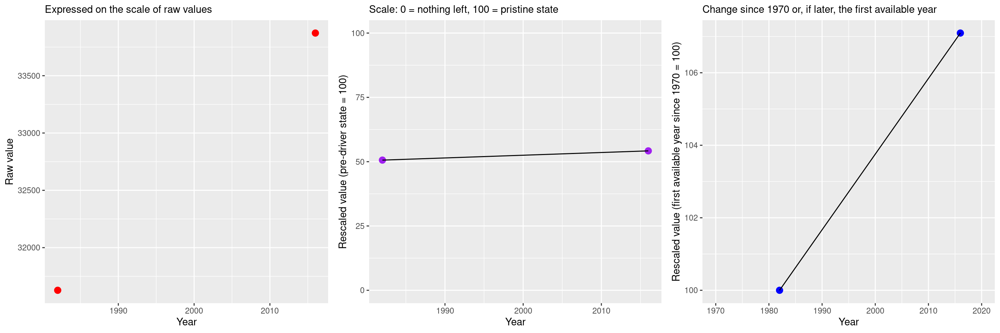
4.1.20 Vegetation biomass (mechanistic model)
plot_indicatorStatusAndTrend("cVeg (PgC)")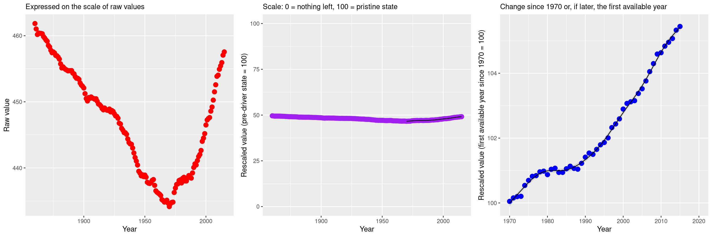
4.1.21 Wetland Extent Trends index
plot_indicatorStatusAndTrend("Wetland Extent Trends Index")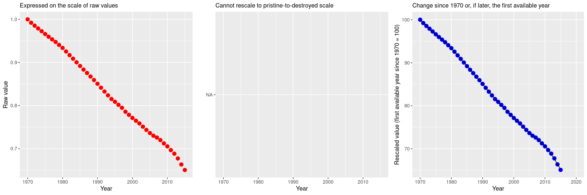
4.2 Indicators of ecosystem function
4.2.1 Biological pump efficiency
plot_indicatorStatusAndTrend("Biological pump efficiency")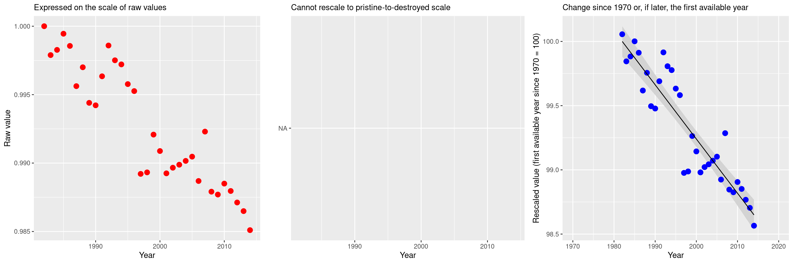
4.2.2 Biomass turnover rate
plot_indicatorStatusAndTrend("Biomass turnover rate")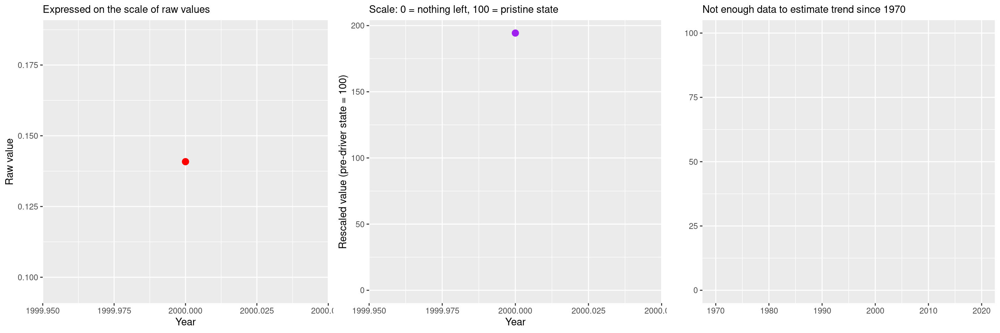
4.2.3 Evapotranspiration (model ensemble)
plot_indicatorStatusAndTrend("Evapotranspiration (1000km3/year)")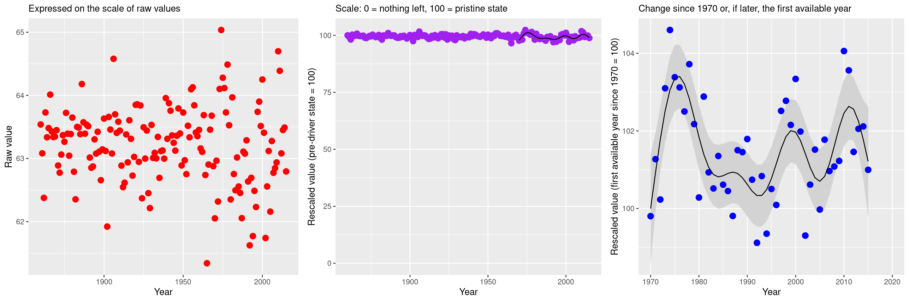
4.2.4 Marine net primary productivity (remote-sensing)
plot_indicatorStatusAndTrend("Ocean Net Primary Productivity (PgC)")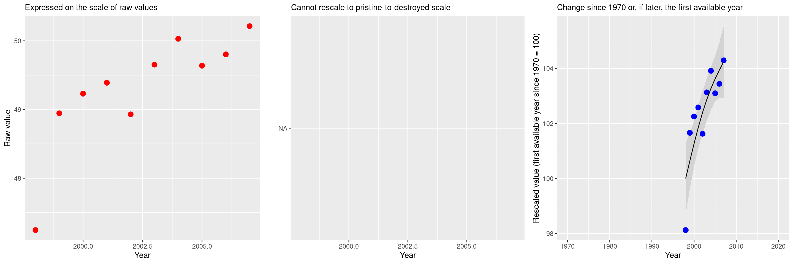
4.2.5 NPP remaining in terrestrial ecosystems
plot_indicatorStatusAndTrend("NPP_eco (Pg C)")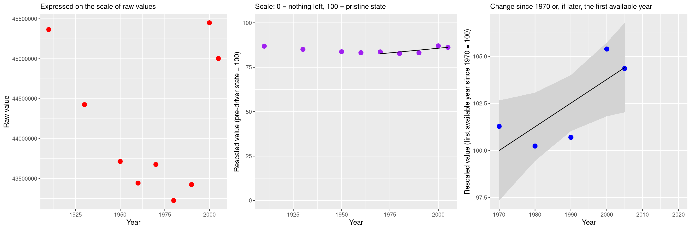
4.2.6 Oceanic carbon sequestration
plot_indicatorStatusAndTrend("Ocean carbon sink PgC") 4.2.7 Terrestrial carbon sequestration (model ensemble)
plot_indicatorStatusAndTrend("NBP (PgC/yr)") 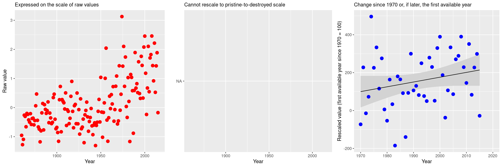
4.2.8 Terrestrial NPP (model ensemble)
plot_indicatorStatusAndTrend("NPP (PgC/yr)") 
#plot_indicatorStatusAndTrend("GPP (PgC/yr)") ERROR: no dataset yet4.2.9 Terrestrial NPP (remote-sensing)
plot_indicatorStatusAndTrend("Terrestrial Net Primary Productivity (PgC)") 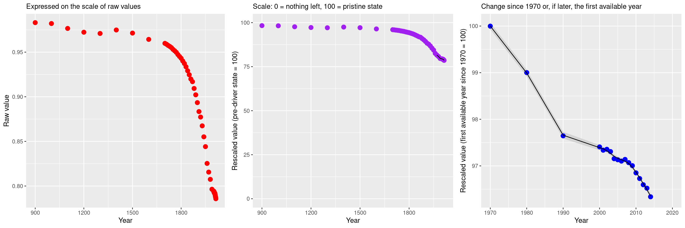
4.3 Indicators of community composition – local scale
4.3.1 Biodiversity Intactness Index (overall)
plot_indicatorStatusAndTrend("Biodiversity Intactness Index (global)") 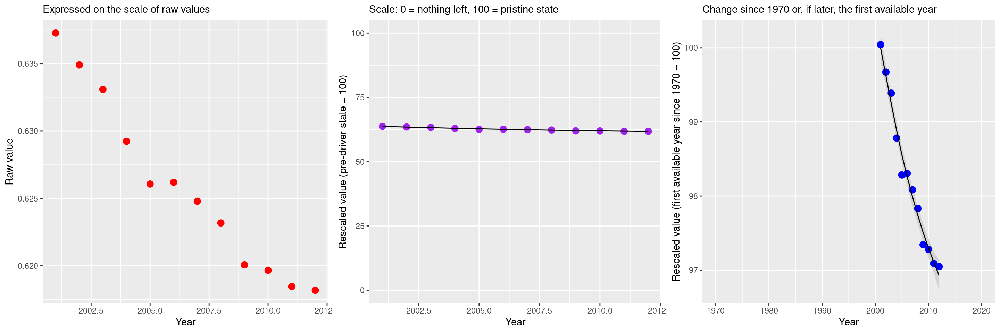
plot_indicatorStatusAndTrend("BII (Hotspots)") 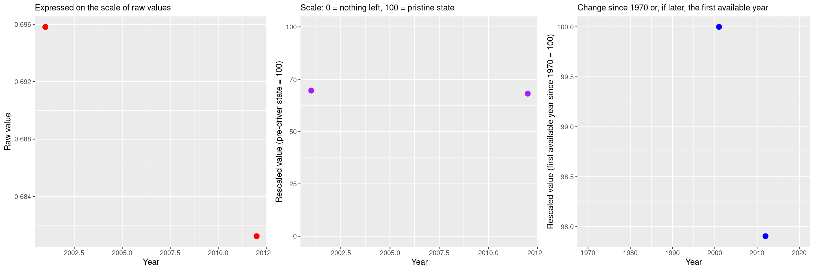
plot_indicatorStatusAndTrend("BII (Indigenous Lands)") 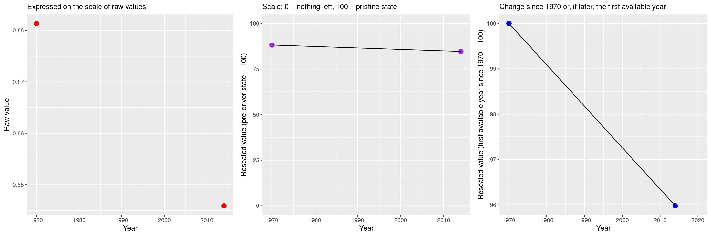
Subset: Tropical Forest BII
plot_indicatorStatusAndTrend("Biodiversity Intactness Index (tropical forest only)") plot_indicatorStatusAndTrend("BII tropical forest (Hotspots)") 
plot_indicatorStatusAndTrend("BII tropical forest (Indigenous Lands)") 
4.3.2 Local species richness (BioTime)
plot_indicatorStatusAndTrend("BioTime Local Species Richness") 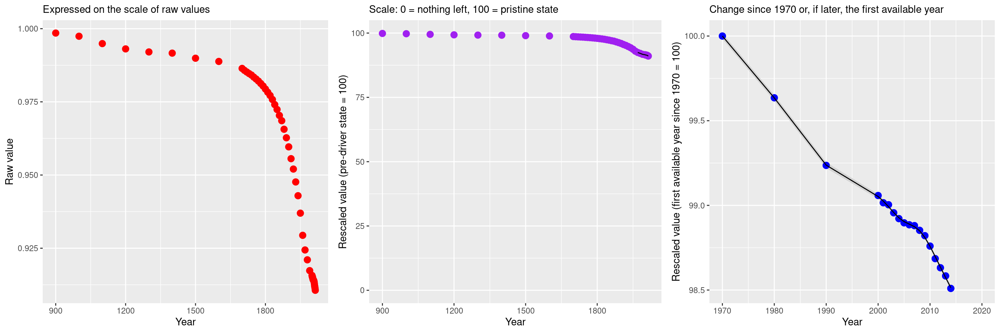
4.3.3 Local species richness (PREDICTS)
plot_indicatorStatusAndTrend("PREDICTS SR-weighted mean local species richness (global)")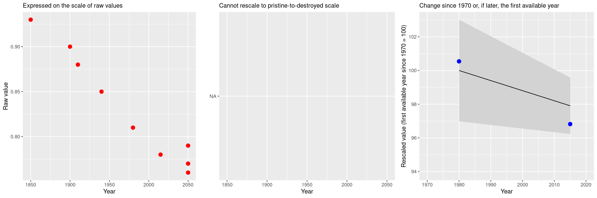
4.3.4 Mean Species Abundance index
plot_indicatorStatusAndTrend("Mean Species Abundance LU")
plot_indicatorStatusAndTrend("Mean Species Abundance CC")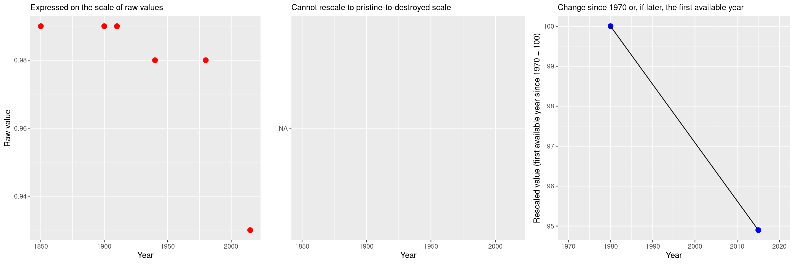
plot_indicatorStatusAndTrend("MSA (hotspots)")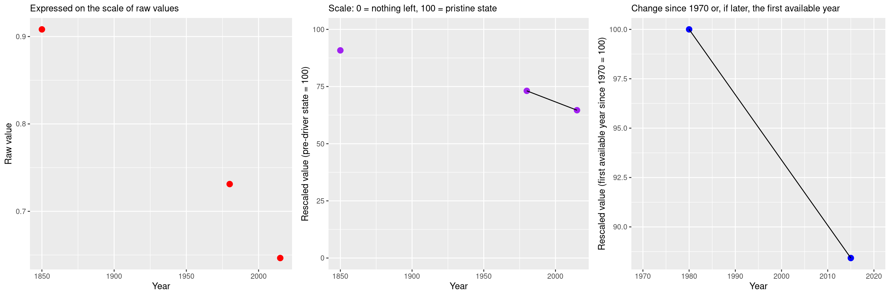
plot_indicatorStatusAndTrend("MSA (IL)")4.4 Indicators of community composition – regional scale
4.4.1 Bird species per grid cell (cSAR)
#plot_indicatorStatusAndTrend(“sar_iDiv_Allbirds_Localtoglobal.csv”)
plot_indicatorStatusAndTrend("cSAR Local results aggregated to Global all birds")
Subset: Forest-specialist bird species per grid cell (cSAR)
plot_indicatorStatusAndTrend("cSAR Local results aggregated to Global forest specialists")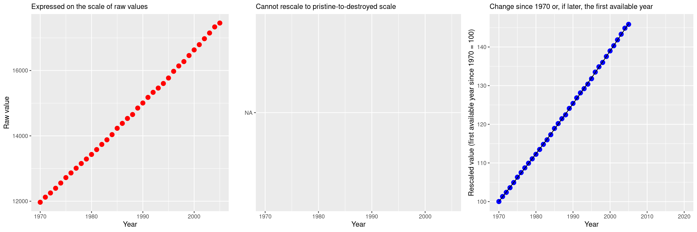
4.4.2 Cumulative number of alien species
plot_indicatorStatusAndTrend("Cumulative number of alien species")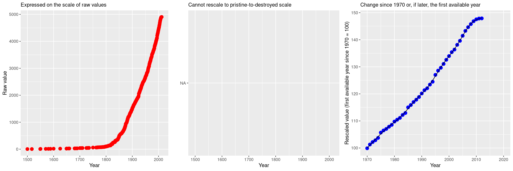
4.4.3 Cumulative introduced invasive aliens
plot_indicatorStatusAndTrend("Number of invasive alien species introductions")
4.4.4 Functional intactness (Madingley)
plot_indicatorStatusAndTrend("Madingley functional richness (50%quantile)") 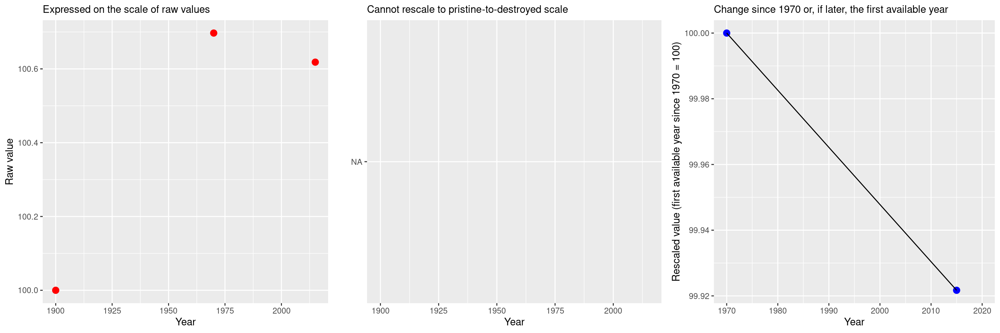
4.4.5 Species richness per grid cell (AIM)
plot_indicatorStatusAndTrend("Change in grid-cell species richness (all taxa) - AIM") 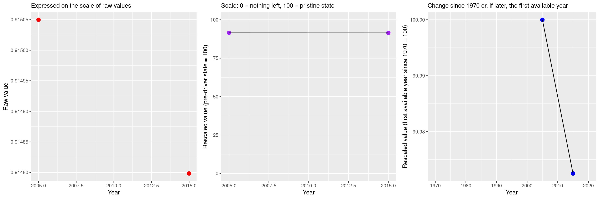
plot_indicatorStatusAndTrend("Change in grid-cell species richness (amphibians) - AIM") 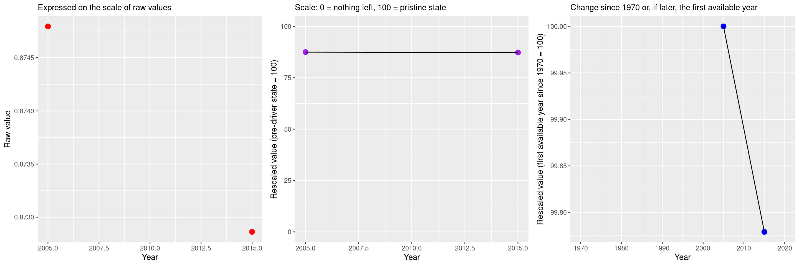
plot_indicatorStatusAndTrend("Change in grid-cell species richness (birds) - AIM") plot_indicatorStatusAndTrend("Change in grid-cell species richness (mammals) - AIM") 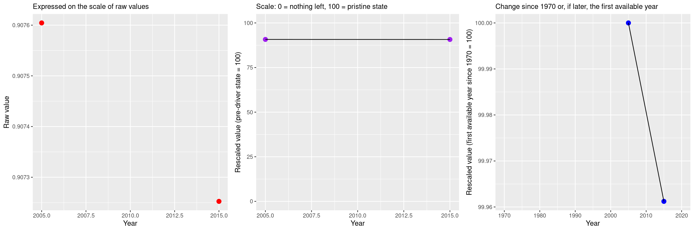
plot_indicatorStatusAndTrend("Change in grid-cell species richness (plants - AIM") plot_indicatorStatusAndTrend("Change in grid-cell species richness (reptiles) - AIM") 4.5 Indicators of species population – species persistence
4.5.1 Biodiversity Habitat Index (species persistence)
plot_indicatorStatusAndTrend("All-taxa richness (BILBI)") 
plot_indicatorStatusAndTrend("All-taxa richness (BILBI) - hotspots") 
plot_indicatorStatusAndTrend("Invertebrate habitat (BILBI)") 
plot_indicatorStatusAndTrend("Plant richness (BILBI)") 
plot_indicatorStatusAndTrend("Vertebrate habitat (BILBI)") 
4.5.2 Global bird species richness change (cSAR)
plot_indicatorStatusAndTrend("cSAR Global calculation all birds")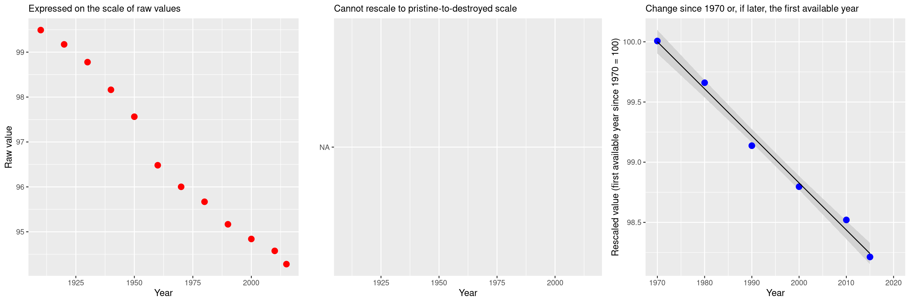
Subset: Global forest-specialist bird richness (cSAR)
plot_indicatorStatusAndTrend("cSAR Global calculation forest specialists")4.5.3 Global mammal and bird species remaining
plot_indicatorStatusAndTrend("Numbers of extant mammal and bird species") 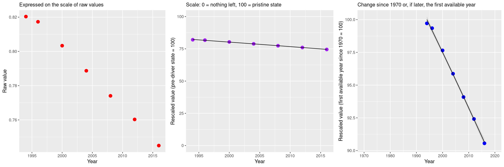
4.5.4 Red List Index (overall)
plot_indicatorStatusAndTrend("Red List Index") 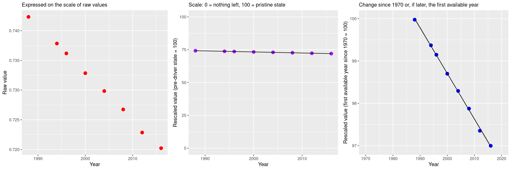
Subset: Red List Index (species used in food and medicine)
# plot_indicatorStatusAndTrend("Red List Index (species used for food and medicine) ") ERROR: does ont find nameSubset: Red List Index (forest specialists)
plot_indicatorStatusAndTrend("Red List index (forest specialists)") Subset: Red List Index (pollinators)
#plot_indicatorStatusAndTrend("Red List Index (pollinator species)") ERROR name not foundSubset: Red List Index (internationally traded species)
plot_indicatorStatusAndTrend("Red List Index (internationally traded species)")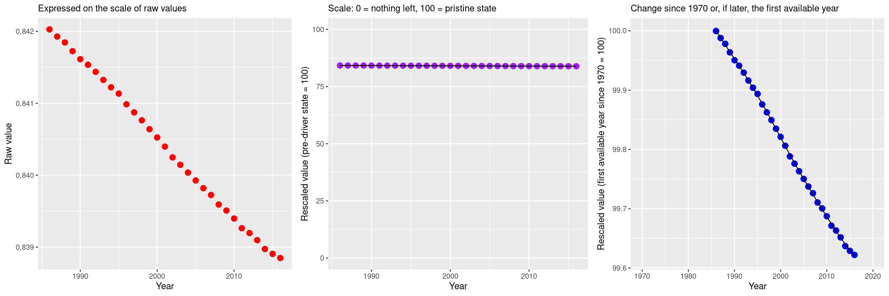
Subset: Red List Index (wild relatives)
#plot_indicatorStatusAndTrend("Red List Index (wild relatives of farmed and domesticated species) ") ERROR does not find name4.5.5 Driver-specific Red List Indices
Subset: Red List Index (impacts of invasive alien species)
plot_indicatorStatusAndTrend("Red List Index (impacts of invasive alien species)")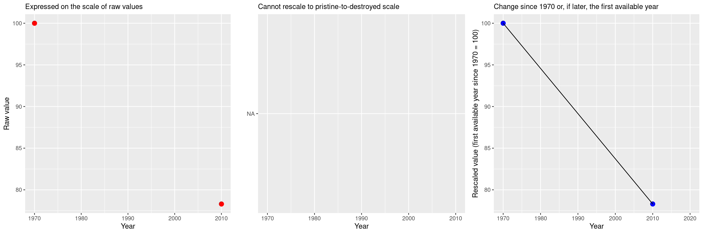
Red List Index (impacts of utilisation)
plot_indicatorStatusAndTrend("Red List Index (impacts of utilisation)")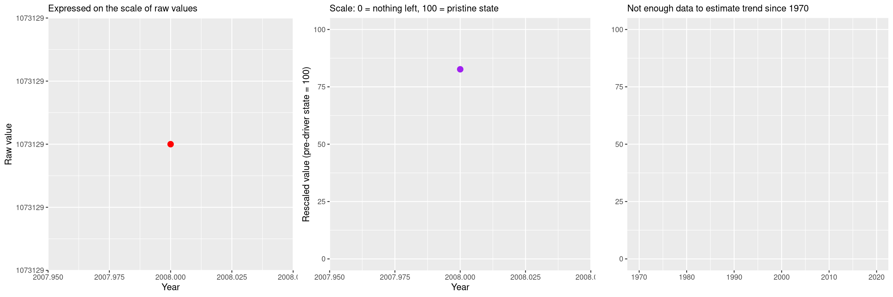
Red List Index (Impacts of pollution)
plot_indicatorStatusAndTrend("Red List Index (impacts of pollution)")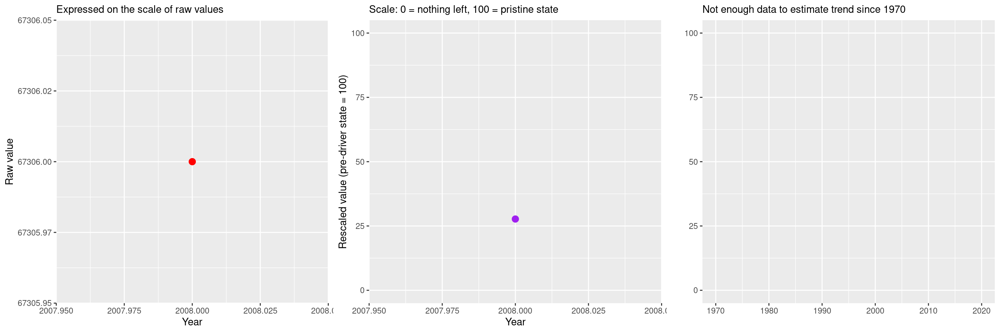
Red List Index (Impacts of fisheries)
plot_indicatorStatusAndTrend("Red List Index (impacts of fisheries)")
4.6 Indicators of species population – geographic distribution
4.6.1 Extent of suitable habitat (mammals)
plot_indicatorStatusAndTrend("Extent of Suitable Habitat")4.6.2 Mammalian range size
plot_indicatorStatusAndTrend("Terrestrial mammal grid cells")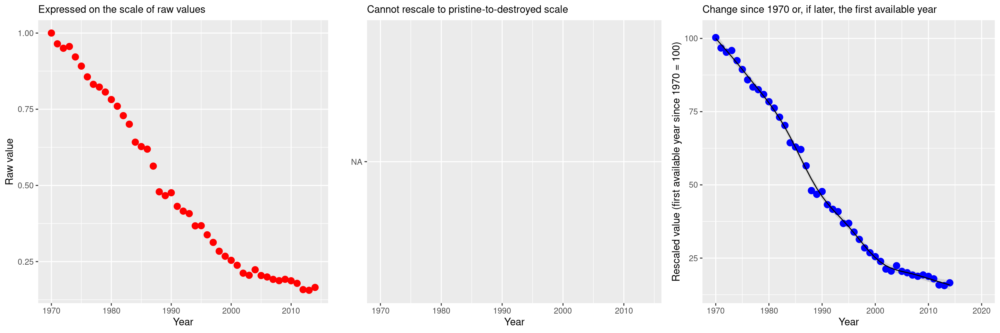
Subset: Megafaunal range size
plot_indicatorStatusAndTrend("Terrestrial megafaunal grid cells")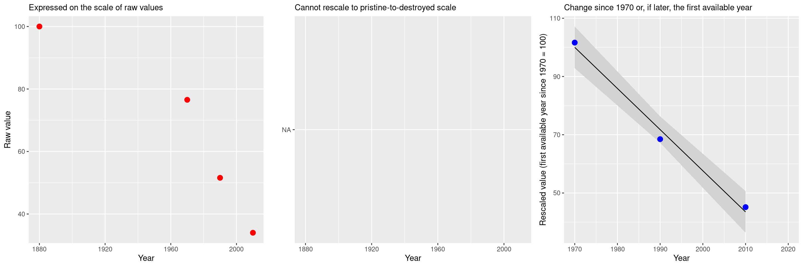
4.6.3 Species Habitat Index
plot_indicatorStatusAndTrend("Species Habitat Index")4.7 Indicators of species population – population size
4.7.1 Fish stocks biologically sustainable
plot_indicatorStatusAndTrend("Proportion of fish stocks within biologically sustainable levels")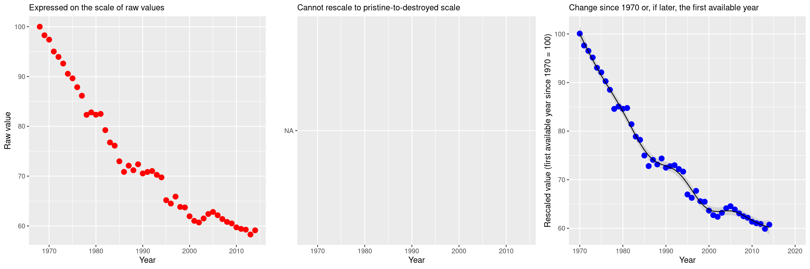
4.7.2 Living Planet Index
#plot_indicatorStatusAndTrend("Living Planet Index (overall) ") # name
plot_indicatorStatusAndTrend("Freshwater LPI")plot_indicatorStatusAndTrend("Marine LPI")
plot_indicatorStatusAndTrend("Terrestrial LPI")
4.7.3 Predatory fish biomass
plot_indicatorStatusAndTrend("Predatory sea fish biomass")4.7.4 Prey fish biomass
plot_indicatorStatusAndTrend("Prey sea fish biomass")4.7.5 Wild Bird Index (habitat specialists)
plot_indicatorStatusAndTrend("Wild Bird Index (habitat specialists)")4.7.6 Wild mammal biomass
plot_indicatorStatusAndTrend("Wild mammal biomass")
4.8 Indicators of species traits
4.8.1 Functional richness (Madingley)
plot_indicatorStatusAndTrend("Madingley functional richness (50%quantile)")
4.8.2 Mammalian body mass
plot_indicatorStatusAndTrend("Median mammalian body mass")
4.8.3 Region-based Marine Trophic Index
plot_indicatorStatusAndTrend("Marine Trophic Index")